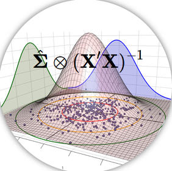

|  |
Testes de hipótese em Modelos Multivariados de Covariância Linear Generalizada (McGLM) |
Introdução
Lineu Alberto Cavazani de Freitas
Ciência de dados
Podemos entender como Data Science ou Ciência de Dados o estudo sistemático de conjuntos de dados com o objetivo de gerar conhecimento sobre determinado assunto. Em suma, o objetivo da Ciência de Dados é extrair informação dos dados e seu processo é caracterizado por etapas como a definição do problema, planejamento do estudo, coleta e análise dos dados e, por fim, a interpretação dos resultados.
Trata-se de um campo de estudo extremamente interdisciplinar que envolve técnicas de áreas como Estatística, Ciência da Computação e Matemática. É uma área bastante abrangente e que vem ganhando destaque nos últimos anos devido a fatores tais como a popularização de grandes bancos de dados e também de técnicas modernas e eficientes de análise. Portanto, as técnicas ditas como pertencentes ao rol de Ciência de Dados visam entender e analisar fenômenos reais a partir de dados, e deste modo auxiliar na compreensão de tais e fenômenos e, por vezes, no processo de tomada de decisão tendo como base as conclusões gerais que podem ser obtidas da análise.
Campos de interesse na Ciência de Dados são: métodos de amostragem, mineração de dados, bancos de dados, técnicas de análise exploratória como visualização, probabilidade, inferência, otimização, infraestrutura computacional, plataformas de Big Data, modelos estatísticos, dentre outros.
No contexto de modelos estatísticos, também chamados de modelos de regressão, existem diversas técnicas de modelagem, tais como: modelos lineares, lineares generalizados, aditivos generalizados, de efeitos aleatórios, aditivos generalizados para locação, escala e forma e ainda os multivariados.
Modelos de regressão
Os modelos de regressão são indicados a problemas nos quais temos interesse em verificar a associação entre uma variável resposta e um conjunto de variáveis explicativas e/ou utilizar o modelo para realizar predições para uma população.
Nos casos univariados mais gerais, estes modelos associam uma única variável resposta, também chamada de variável dependente, a uma ou mais variáveis explicativas, conhecidas como variáveis independentes. De forma geral, um modelo de regressão é uma expressão matemática que relaciona a média da variável resposta às variáveis preditoras (covariáveis), em que a variável resposta segue uma distribuição de probabilidade condicional às covariáveis e a média é descrita por um preditor linear. O caso mais conhecido é o modelo linear normal, no qual um dos pressupostos é de que a variável resposta, condicional às variáveis explicativas, siga distribuição Normal.
Todavia, não são raras as situações em que a suposição de normalidade não seja atendida. Uma alternativa por muito tempo adotada foi buscar uma transformação da variável resposta a fim de atender os pressupostos do modelo, tal como a família de transformações Box-Cox (Box and Cox 1964). Contudo, este tipo de solução leva a dificuldades na interpretação dos resultados.
Neste contexto, a proposta de maior renome para contornar tais restrições foi apresentada por Nelder and Wedderburn (1972), que introduz os Modelos Lineares Generalizados (GLM). Essa classe de modelos permitiu a flexibilização da distribuição da variável resposta de tal modo que esta pertença à família exponencial de distribuições. Em meio aos casos especiais de distribuições possíveis nesta classe de modelos estão a Bernoulli, Binomial, Poisson, Normal, Gama, Normal inversa, entre outras. Trata-se portanto, de uma classe de modelos de regressão univariados para dados de diferentes naturezas, tais como: dados contínuos simétricos e assimétricos, contagens, proporções, assim por diante. Tais características tornam esta classe uma flexível ferramenta de modelagem aplicável a diversos tipos de problema.
Embora as técnicas citadas sejam úteis, há casos em que são coletadas mais de uma resposta por unidade experimental e há o interesse de modelá-las em função de um conjunto de variáveis explicativas. Para problemas com essa estrutura, uma alternativa são os modelos lineares multivariados, nos quais associa-se um conjunto de respostas a uma ou mais covariáveis. Porém, por maior que seja seu potencial de aplicação, essa classe apresenta limitações como a necessidade de normalidade multivariada, homogeneidade das matrizes de variâncias e covariâncias, além de independência entre as observações.
Uma alternativa para solucionar tais limitações são os Modelos Multivariados de Covariância Linear Generalizada (McGLM), prospostos por Bonat and Jørgensen (2016). Essa classe permite lidar com múltiplas respostas de diferentes naturezas e, de alguma forma, correlacionadas. Além disso, não há nesta classe suposições quanto à independência entre as observações da amostra, pois a correlação entre observações pode ser modelada por um preditor linear matricial que envolve matrizes conhecidas.
De forma geral, o McGLM é uma estrutura para modelagem de múltiplas respostas, de diferentes naturezas, em que não há necessidade de observações independentes. Estas características tornam o McGLM uma classe flexível ao ponto de ser possível chegar a extensões multivariadas para modelos de medidas repetidas, séries temporais, dados longitudinais, espaciais e espaço-temporais.
Testes de hipótese
Quando trabalhamos com modelos de regressão univariados, por diversas vezes há o interesse em avaliar os parâmetros do modelo. Isto é, verificar se os valores que associam as variáveis resposta às variáveis explicativas são iguais a determinados valores de interesse. Isto é feito através dos chamados testes de hipótese. Em geral, existe o interesse em avaliar se há evidência suficiente para afirmar que o parâmetro que associa a variável explicativa à variável resposta é igual a 0, pois, caso esta afirmação seja verdadeira, podemos concluir que a variável explicativa não está associada à variável resposta. Contudo, através dos testes de hipótese podemos avaliar outros valores diferentes de 0.
Existem ainda técnicas como a Análise de Variância (ANOVA), na qual o objetivo é analisar o efeito de cada uma das variáveis explicativas, isto é, avaliar se a retirada de cada variável gera perda ao modelo ajustado. Em outras palavras, na Análise de Variância realizamos sucessivos testes de hipótese para verificar se o parâmetro que associa a variável explicativa à variável resposta é igual a 0.
Quando se está na classe de modelos multivariados para dados gaussianos, extende-se o conceito de Análise de Variância (ANOVA) para a Análise de Variância Multivariada (MANOVA) (Smith, Gnanadesikan, and Hughes 1962) e dentre os testes de hipótese multivariados já discutidos na literatura, destacam-se o \(\lambda\) de Wilk’s (Wilks 1932), traço de Hotelling-Lawley (Lawley 1938; Hotelling 1951), traço de Pillai (Pillai and others 1955) e maior raiz de Roy (Roy 1953).
Objetivos
No entanto, considerando o cenário com múltiplas respostas não gaussianas, são escassas as discussões na literatura a respeito de testes de hipótese sobre os parâmetros do modelo. Deste modo, nosso objetivo geral é o desenvolvimento destes testes de hipótese para os Modelos Multivariados de Covariância Linear Generalizada (McGLm) por se tratar de uma classe de modelos flexível e com alto poder de aplicação a problemas práticos em que se fazem necessários tais testes para avaliação do modelo.
Portanto, nosso trabalho tem os seguintes objetivos específicos:
Propor e implementar testes de hipótese gerais para os Modelos Multivariados de Covariância Linear Generalizada.
Implementar funções para efetuar Análises de Variância Multivariadas para os Modelos Multivariados de Covariância Linear Generalizada.
Demonstrar as propriedades e comportamento dos testes propostos com base em estudos de simulação.
Demonstrar o potencial de aplicação das metodologias discutidas com base na aplicação a conjuntos de dados reais.

|

|